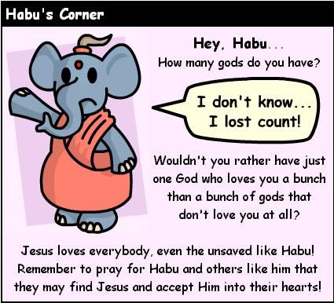

Had a good weekend. The party Saturday was definitely the highlight. April throws great parties. So many people taking to me, I have no idea why...when did I become so popular? I added Marilia to my "Supa Fly" group of friends in my cell phone...this was based on the fact that among the many people at the party, I felt like I wanted to talk to her the most. I think she's very mature, she's very responcible about alot of things. She handles difficult situations very well.
The Lambda retreat was more or less nothing worth talking about. Yesterday my dad came up and took me to lunch. I really want to go home the next opportunity I've got. He says my car isn't as bad as I think it is. I guess that's good news. He even dropped off a $300 check to help pay for repairs, but I've decided that I'm not going to put another dime in that car (besides the countless change I'm sure is stuck beneath my seat, among various sticky mysteries). It's just not worth it. I think I'll take Tee's advice this time.
Oh, yah, my computer hasn't worked consistantly since last Monday, which is why I haven't been able to update on a fairly regular basis. I'm either going to make arrangements to buy a new computer this week or fix my old one. I've got $300 to make it happen...I'm just not sure investing in pieces of junk is really worth anything anymore.
I HEAR there's a party on Saturday for me, but you're just going to have to talk to Missy and Genevieve about that. Other than that, I'm going to be going out on Wednesday to get a birthday shot. You could see me there, I think I'm willing to get a buzz at least.
Ok, can I just say one thing? Now that I'm 21, can this please stop now. Aging is just not my bag anymore, and I'd like to get off this ride now. If that's at all possible, let's make sure this year never ends, thank you :-)
Well, my computer is in the shop, are you happy? I am certainly not. How annoying. Always breaking, I'm so over this Pro-Star crap. I mean, it's like some took a shit on a conveyor belt and called it a computer. I'm sure the Pro-Star saga may end this week...or perhaps the would will still turn :-/
So, my Friday plans, I'm going to be utilizing my new status as being LEGAL. Saturday, who knows? I've certainly not been told of any SURPRISE PARTIES. Sigh. Oh, IN CASE YOU DIDN'T KNOW, I was published yesterday. Click here to read the article. I think it was better than the first one.
This week is the calm before the storm (aka actually doing something). Last night, I came home and munched on some birthday cake. Then I watched some Buffy (it was the pilot, and it was more enjoyable than I thought it would be). Then I went to sleep, woke up, talked on the phone forever, went to sleep again...had some ice cream, went to bed. What a worthless evening.
Tonight, I'm going to go to Boneshakers with Jerm to get my birthday shot! Oh, what fun :-) For now, I'm bored, having to go to class...I would love to go home and sleep some more. Oh well...off to Spanish presentation BOREDOM :-/
My computer's fixed. Yah-hoo. I apologize for strange Blog oddities the last few days. I assure you, they will occur again, just not in the near future. Analness has kicked in once more. Yey for analness!

Check this shit out...you know, by clicking on the shit, don't click on this shit, because that would just be redundant.
By the way, in case you didn't know, this shit I am presenting to you is for your general disgust and anguish, not to promote any message that I would want to impart on you. Please note this distinction.
People are CRAZY...
Sigh...the computer continues to be a pain in my ass. It freezes like every five minutes! Let me tell you, I've gotten rather chummy with our friend Blue Screen of Death. He's an asshole, and you need to stay away from him. I mean, this aggrivation is just too much! OH, here it comes again! Fizzle...FIZZLE......RAAAAAAAAAAAAAAAA!
I have an idea of what I'd like to title this journal, but I think I may wait until after the party for the big reveal. The party may develop an "Un-" variation of my title, and that would be obviously a shame.
Thanks to buddies for last night, I had a good time at Bones, enjoying my legal status. I can assure you that I was not drunk though, just very pleasantly buzzed. I am also frequently pulled in several directions, I feel I neglect people sometimes, and I just want to put out there that that's been happening lately. I'm not sure what's going on really, I should maybe make time for people, but that's very difficult sometimes. I'm kinda wary about mysterious Saturday, I hope that that circus doesn't become difficult as well, I've put out a list of people that I'd like to come and party, and I hope they don't expect the world from me. I just want to get drunk and have some fun...make out with Missy, make some fun slurred speech, you know? Classic Drunk Nick fun! I want to dance the throw people around, maybe even start a tickle war, I want to make people uncomfortable, but happy. Please bear with me, we'll have a good time, if we're patient.
Can't believe I haven't mentioned it, but I love Gen and Missy. I have the best friends ever. Not only do they take me out on my birthday on a lame ass Monday, but they put up with inviting all these folks to my party Saturday. I've never had friends that had worked so hard to make me happy. All I can say is this cycle of birthdays--Gen's, mine, and Missy's--it's all so tiring. Everytime it's your turn to be the birthday boy, your friends always outdo you. Missy's party is going to rock so bad, it's not even funny...and next year, Gen is going to be very pleasantly surprised :-)
So, I hope this works for you. Being without my computer makes it hard to make these meaningful entries...I despise updating in the office, but I do what I must.
"I'm going under, drowning in you / I'm falling forever, I've got to break through..."
Going out w/ Gen tonight! Quick update. Forgot to mention that I had lunch with Dean Bennett yesterday. Yup, that's the Dean of Students for the University of Georgia! He actually invite me to lunch a couple of weeks ago and I was nice enough to ask him to extend the invitation to the rest of the Board. It went very nice, he's a really wonderful man. We went to the Savannah Room and I had a delicious chicken over rice dish.
Oh, yah, my computer is getting a new brain. Hopefully no more blue screen of death! Yay! Don't expect to see me anywhere except on the cell phone, but do leave a message, I am able to respond. Ok, all, see you at the party ;-)